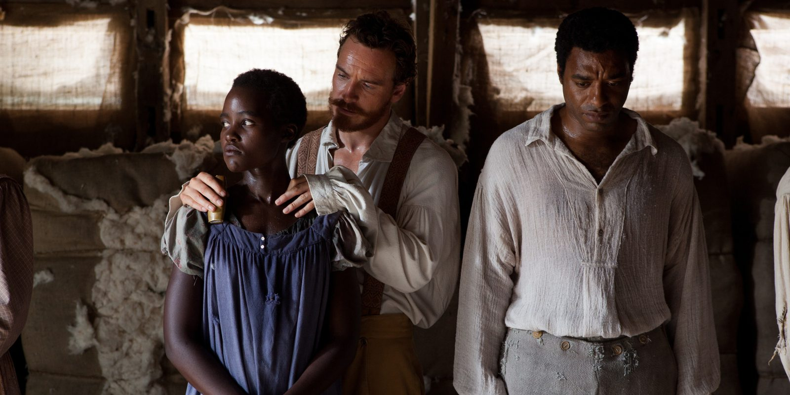

Le top des films 2014 à fin juillet ...
This post was originally written in French.
Et le top des films à ce jour en 2014

1/The wolf of wall-street, bande-annonce, score 8/10, "Ca parle pendant 3h, c'est fun et déjanté, comme d'habitude Scorsese nous sort quelques plans qui seront copiés mille fois dans les années à venir et puis il y a Di Caprio, qui porte tout le film. Alors même si c'est un peu trop long (même si on parle d'une version de 4h en Director's Cut ) ... c'est déjà un des meilleurs films de 2014"

2/ Her, bande-annonce, score 8/10, "Her, c’est un peu une claque. Pas tellement étonnant venant de la part de Spike Jonze . Mais je dois dire que j’ai été réellement surpris par la manière dont le concept de départ se développe sur le film. Si on pense à un “truc” de scénariste, qui apportera de la drôlerie et de la loufoquerie, plus le film avance, plus ce “truc” se transforme en une réelle bonne idée. Ajoutez à cela une photographie exceptionnelle (vraiment le film est splendide visuellement) et puis une splendide interprétation de Joaquin Phoenix et de Scarlett Johansson, sans présence physique dans le film. Ben voilà, Her, c’est juste un des top de l’année, pour sûr!"

3/ The Raid 2, bande-annonce, score 8/10, "Oui c'est un film de genre, et justement dans le genre, on atteint presque un sommet. Ballet d'action et de violence, ballet d'action et mise en scène inventive. C'est la bombe de 2014. "

4/ How to train your dragon 2, bande-annonce, score 7,5/10, "Bon d'accord, le classement est peut-être un peu exagéré, mais voilà je pense que je suis tellement fan du premier, que j'étais par définition amoureux du second. Certes, la découverte, n'est plus aussi présente, mais il reste un univers génial, et des scènes réellement exceptionnelles pour un dessin-animé."

5/ All is lost, bande-annonce, score 7/10,"J.C. Chandor, deux films et déjà chez les grands. Robert est dans un bâteau. Voilà le pitch d'un film qui est sorti l'année dernière aux US et en France, et qui n'a pas encore de dates en Belgique. Mais s'il sort, ce sera un des top de l'année."

6/ 12 years a slave, bande-annonce,score 7/10,"Je n'en ferais pas le chef d'oeuvre tel que décrit pas la critique américaine, mais le cinéma brut et direct de Steve McQueen s'avère effectivement très efficace pour décrire sans artifices cette partie de l'histoire américaine. On vole à mille lieux au-dessus d'un film comme The Butler".

7/ American Hustle, bande-annonce, score 7/10, "Pas non plus le Goodfellas de David O. Russel, par contre, je donne 10 pour la prestation de Christian Bale, qui est juste grandiose dans le film."

8/ The Grand Budapest Hotel,bande-annonce, score 7/10, "Ralph Fiennes est formidable, le film est délirant à souhait. Wes Anderson est drôlissimement tordu"
9/ Short Term 12, bande-annonce, score 7/10,"C'est juste simplement écrit, parfaitement joué et très bien mis en scène. Super!"

10/ Dawn of the planet of the apes, bande-annonce, score 7/10,"Une véritable claque visuelle en terme de décors, de mise en scène et d'effets spéciaux."

11/ Captain America: The Winter Soldier, bande-annonce, score 7/10, "Quelle surprise. Moi qui ne suit pas le plus grand de Marvel en général, et encore moins de ce qui tourne autour des Avengers en général, voilà un vrai bon blockbuster de l'été 2014. Parce qu'il a un scénario qui tient bien la route, et parce qu'il est mis en scène comme un film d'action classique, avec des supers scènes (dont certaines font un peu penser à la fameuse fusillade de Heat) dont la lisibilité est parfaite. "

12/ Joe, bande-annonce, score 7/10, "Excellente surprise, un bon film avec un très bon Nicolas Cage (comme quoi rien n'est perdu). Après un chouette Prince Avalanche, voilà une nouvelle réussite de David Gordon Green. Faut quand même le faire de passer de la comédie Pineapple Express à un film sur un ex-taulard alcoolique qui cherche la rédemption en prenant sous son aile un gamin battu par son père pas net, tout cela dans un trou du Texas. Et pour la petite histoire, le père du gamin, est joué par Gary Poulter, un sans abri au moment du tournage, qui hante littéralement le film par son interprétation qui n'en est probablement pas une. Il est malheureusement décédé peu de temps après le tournage. Alors, ce n'est pas un film dont on sort avec la banane, mais pour les gens qui aiment les films noirs, c'est un des bons films de 2014!"

13/ Afflicted, bande-annonce, score 7/10, "la belle surprise de l'année pour le moment. Comme quoi, un bon found footage movie, par des jeunes réals brillants et ingénieux, c'est top".

14/ Big Bad Wolves, bande-annonce, score 7/10, ""

15/ Locke, bande-annonce, score 7/10, "Tom Hardy, une voiture, un téléphone, ... c'est tout, mais ca suffit à faire un des meilleurs film de 2014 !"

15/ Snowpiercer, bande-annonce, score 7/10, "Et tout ca dans un train, c'est dingue ;-)"
Les mentions honorables
The Dallas Buyers Club, bande-annonce, score 7/10,"La bonne question en voyant Dallas Buyers Club c'est où s'arrêtera Matthew McConaughey? "
Edge of tomorrow, bande-annonce, score 6,5/10, "C'est bien foutu, drôle et puis Tom Cruise est franchement bien dans le film. Alors ne boudons pas le plaisir d'un blockbuster réussi. "
Jack Ryan: Shadow Recruit, bande-annonce, score 6,5/10, "Je ne comprends pas trop les mauvaises critiques lors de la sortie. Il est plutôt réussi ce reboot."
Cheap Thrills, bande-annonce, score 6,5/10
Grand Piano, bande-annonce, score 6,5/10, "une idée originale, dont on s'étonne qu'elle tienne tout un film. Sympa. "
Fruitvale Station, bande-annonce, score 6,5/10,"Basée sur des faits réels, voilà une histoire dont les 20 dernières peuvent vous hanter pour quelques soirées. L'acteur principal est top."
The Spectacular Now, score 6,5/10
Prince Avalanche, bande-annonce, score 6,5/10,"Simplement très sympathique"
Neighbors, bande-annonce, score 6/10, ""
Zulu, bande-annonce, score 6/10, "Je ne sais pas pourquoi, mais j'aime bien les films de Jérôme Salle. Il réalise de bons thrillers, sans se prendre la tête. Ici c'est très bien joué, et l'image est splendide. Ca casse rien, mais c'est c'est sympa"
X-men: Days of Future Past, bande-annnonce, score 6/10, "Une bonne idée, un peu trop foutrac et avec une fin de blockbuster qui s'essoufle. Sympa, mais pas génial."
Yves Saint Laurent, bande-annonce, score 6/10
August: Osage County, bande-annonce, score 6/10
Les pas encore vus
**Suzanne, Kill your darlings*, *Nebraska,* *Upstream color, Le Vent se lève, We are what we are,**** Diplomatie, La crème de la crème, Blue ruin, Deux jours un nuit , 22 jump street, Oculus, The homesman, Starred up, The rover, Pas son genre, Tracks, Boyhood, Maps to the star, Guardians of the galaxy, The double, Sils maria, Enemy, Deliver Us from Evil, The Lego movie, Under the skin, Enemy, Foxcatcher, Mommy, Whiplash